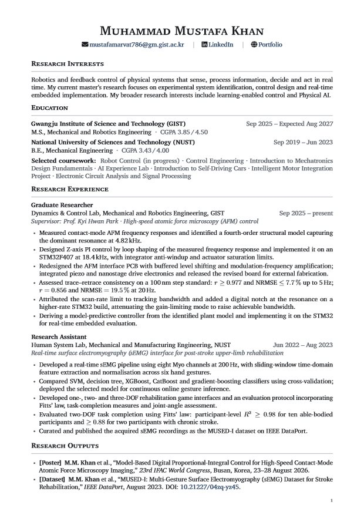
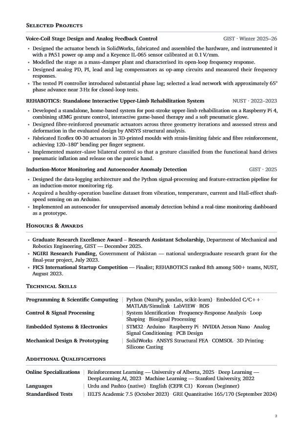

Curriculum vitae
Read my curriculum vitae below or download a copy.
The CV file is not available at this address at the moment. The About section and the project pages cover the same ground, and I am glad to send the document by email.

